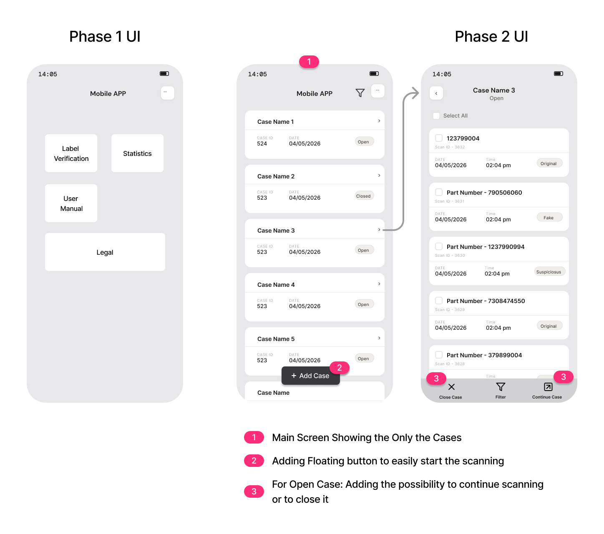

Building a reliable counterfeit detection system at scale
Architecting a Multi-Layer Detection Solution to Protect Billions in Annual Value
Background
Background
This is a global authentication initiative protecting billions in annual supply chain value.
The system includes a Mobile App used by field inspectors, a web platform for analysis, and multiple integrated backend systems. Key data systems include a Print Database, labeling systems, and Master Data repositories.
Strategy
Reduce Friction, Increase Impact
The strategy is to reduce friction in the field application so teams can verify more products, allowing the field application to filter genuine products at scale while the team focuses on real threats.
!Full strategy is included in the protected case study (password-protected for confidentiality).
System
The Counterfeit Detection System: How All Systems Connect
System Architecture: The mobile detection platform integrates 6+ data sources and operational systems.
Key Challenge: coordinating complex integrations across organisational boundaries while maintaining a single, unified user experience.
!Full technical architecture and system details are included in the protected case study (password-protected for confidentiality).
Mobile APP
Mobile APP Functionality
Verify products, identify inconsistencies instantly. The system filters genuine items from suspicious ones, so your team focuses only on real threats—protecting billions in supply chain value.
Challenges
Detection engine built on false assumption: Expected all labels to have unique serialisation codes. In reality, 70% of supply chain lacks this data. System coverage: 30%.
Solutions
System 1: Connect app directly to authoritative product database → expand validation from 30% to 70%+ coverage.
System 2: Add encryption as alternative authentication method.
Mobile APP: Detection Engine
Detection Engine Built on Incomplete Assumptions
Detection Engine "Perfect Life"
Built on assumption: complete product identification data universally available across the supply chain.
Detection Engine "Real Life"
Legacy products lack modern identification markers. Even when identification systems exist, implementation varies widely across suppliers.
Lessons
Don't assume what systems can do. Investigate the actual capabilities.
!For a comprehensive understanding of how the detection engine limitation was diagnosed and managed, please refer to the protected case study.
Mobile APP: UX Audit
From User Feedback to UX Audit to Clarity
During my early months, I discovered previous user research that hadn't been acted upon. I conducted a comprehensive UX audit.
Users' Response
Interface Not Intuitive
Excessive information on screen
Workflow too lengthy and time-consuming
Reliability concerns
UX Audit Finding
Main screen overwhelmed with features: 7+ information categories with no clear hierarchy.
Simplifying the Workflow
!For detailed before/after comparisons, wireframe progression (Phase 1 and Phase 2 designs), and user testing results, please refer to the protected case study.
Additional Security
Managing External Vendor Coordination
Additional Security Feature: Building Defence-in-Depth
ASF is an encryption solution being integrated to add invisible security markers to labels. ASF will be integrated into the Mobile APP, allowing field inspectors to authenticate labels using an additional security layer.
Third-Party Integration Constraints
Implementing the encryption solution required coordinating between multiple external vendors. Organisational policy required formal governance structures that extended timelines significantly.
How I Managed It
Accepted the constraint and adapted: documented all technical questions clearly, tracked feasibility blockers, kept stakeholders informed throughout.
!Complete vendor coordination timeline and technical feasibility assessments are documented in the protected case study.
Measurements
Timeline & Measurements
Current Implementation Status
Master Data Integration: In progress (expected Q2 2026)
!Detailed business impact metrics, measurement methodology, and expected outcomes are documented in the protected case study.
Insights
Key Product Insight
The core challenge was not model capability alone, but the mismatch between system assumptions and real-world operational conditions.
Improving detection meant diagnosing the gap between what the system assumed and what the operational environment actually provided — and then redesigning both the data architecture and the user experience to match reality.
!To respect confidentiality constraints, this case study presents a generalized version of the project. A full in-depth version is available for recruiters and hiring managers upon request.
Building a reliable counterfeit detection system at scale
Architecting a Two-Layer AI Authentication System to protect €1.4B
Confidential — Full Version
Background
Background
This is a global anti-counterfeiting initiative protecting €1.4B annually.
The system includes a Mobile App used by field inspectors, a web platform for analysis, and multiple integrated backend systems: a Print Database, labeling systems (ABC/Big ABC), Master Data repositories, and an Omni case management system.
Note: System names have been changed for confidentiality.
Strategy
Reduce Friction, Increase Impact
The strategy is to reduce friction in the Mobile App so field inspectors can scan more labels, allowing the app to filter genuine products at scale while the team focuses only on real threats—protecting €1.4B in annual value.
System
The Counterfeit Detection System: How All Systems Connect
Mobile APP
ML-powered label scanner trained on thousands of genuine and counterfeit labels. Identifies counterfeits in real-time.
Print Database
Stores label and package designs. Receives product data from Master Data; sends to Mobile APP.
ABC
Printing system that creates unique DMC codes on labels. Two versions: Online (creates codes) and Offline (supplier code only). Not all suppliers use both.
Big ABC
Packaging database connected to Master Data.
Master Data
Authoritative database of all product information (Part Number, description, supplier, country of origin). Currently integrating with Mobile APP.
ASF
Third-party encryption solution. Adds invisible security layer to labels and packaging for additional authentication.
Omni
Case management system where field inspection cases arrive from inspectors.
Mobile APP
Mobile APP Functionality
Scan labels, identify counterfeits instantly. The app filters genuine products from suspicious ones, so the team focuses only on real threats—protecting €1.4B in annual value.
Challenges
Rule engine built on false assumption: Expected all labels to have unique serialisation codes. In reality, 70% of supply chain lacks this data. System coverage: 30%.
Solutions
Master Data integration: Connect app directly to authoritative product database → expand validation from 30% to 70%+ coverage.
ASF security layer: Add encryption as alternative authentication method.
Mobile APP: Rule Engine
Rule Engine Built on False Assumptions: Solved with Master Data Integration
70–80%
of labels in the active supply chain lack the serialisation the rule engine expects
Rule Engine "Perfect Life"
Built on flawed assumption: that all labels would contain DMC (Data Matrix Code) serialisation — a unique code generated when suppliers print information from the ABC system.
Rule Engine "Real Life"
Pre-DMC era: Millions of existing labels have no serialisation. Even in the ABC system, not all suppliers use both Online and Offline versions.
Why ABC was not the answer
When I took over, the challenge was already discovered by my predecessor. The initial strategy was to pull additional product info from the ABC system — but ABC couldn't reliably provide it across all label types.
The Stakeholder Discovery
While investigating ABC, I realised there was no stakeholder map. I discovered that Logistics owned both the Print Database and the ABC system itself. This opened a new conversation — and ultimately a better solution.
Master Data as the Solution
During a workshop with the Logistics team, they suggested connecting Mobile APP directly to Master Data instead. I approached the Master Data team, got alignment, and initiated integration. This expands detection coverage from 30% to 70%+.
Lessons
Don't assume what systems can do. Investigate the actual capabilities.
Mobile APP: UX Audit
From User Feedback to UX Audit to Clarity
Two months ago, I discovered a user survey from mid-2025 that had been overlooked. I decided to act on it, completed a UX Audit in a day.
Users' Response
App Not Intuitive
Too much text
Scan Flow is too long
Not reliable — confirming rule engine issues
UX Audit Finding
Main screen had 5 tabs (Label Verification, Results, Scans, Legal, User Manual) with no information hierarchy. Core goal: scan as many labels as possible — but interface worked against it.
UI: From Complexity to Clarity
Constraints I worked within:
Budget: Designed a 2-phase UX rollout.
Team Lead resistance: Initially said UX was fine. I documented the audit findings and presented user data — the evidence changed the conversation.
Scanning Flow
From 5 Tabs to Focused Interface
Early Detection: Starting with ASF Authentication
The scanning workflow now starts with ASF verification — inspectors check the encryption layer first, providing immediate authentication before proceeding to label scanning.
Current Flow
Proposed Flow

Key Simplifications
Scan Flow: focusing only on scanning
Scans under Cases: now inspectors know which scans belong to which case
Secondary info moved under Burger menu: inspectors are no longer distracted
Add User Flow: tested with users and removed — added no value
Take Additional Photo: tested and confirmed by Product Identification Team as no-value — removed
Additional Security
ASF Integration: The 4-Month Delay and How I Managed It
Additional Security Feature: Building Defence-in-Depth
ASF is an encryption solution being integrated to add invisible security markers to labels. ASF will be integrated into the Mobile APP, allowing field inspectors to authenticate labels using an additional security layer alongside the ML detection engine.
The ASF Escalation Challenge
When I took over, NDAs were already signed with 2 potential ASF suppliers, but technical feasibility remained unclear. The core blocker: the ASF suppliers couldn't speak directly to our engineering team due to organisational policy.
Every technical question had to go through legal, through official channels — adding weeks to each exchange. This constraint cost approximately 4 months of delay.
The Impact & How I Managed It
Documented all technical questions clearly to minimise misunderstandings
Tracked feasibility blockers and created a decision log
Kept stakeholders informed with clear status updates
Escalated only when decisions were blocked, not to vent frustration
Measurements
Timeline & Measurements
Business Impact (2024 baseline)
€1.4B
in annual gross profit safeguarded
€50–100M
in brand value protected
€1.56M
in counterfeit products seized
€2.8M+
in claims managed
Current Implementation Status
Master Data Integration: In progress (expected Q2 2026)
UX Redesign Phase 1: In user testing (Phase 2 pending Phase 1 results)
The core challenge was not model capability alone, but the mismatch between system assumptions and real-world operational conditions.
Improving detection meant diagnosing the gap between what the system assumed and what the operational environment actually provided — and then redesigning both the data architecture and the user experience to match reality.